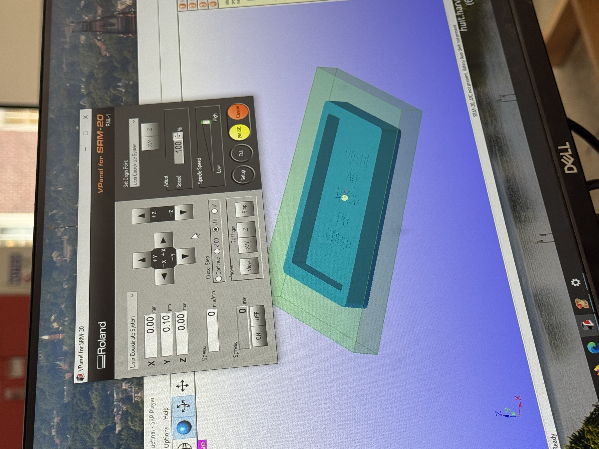
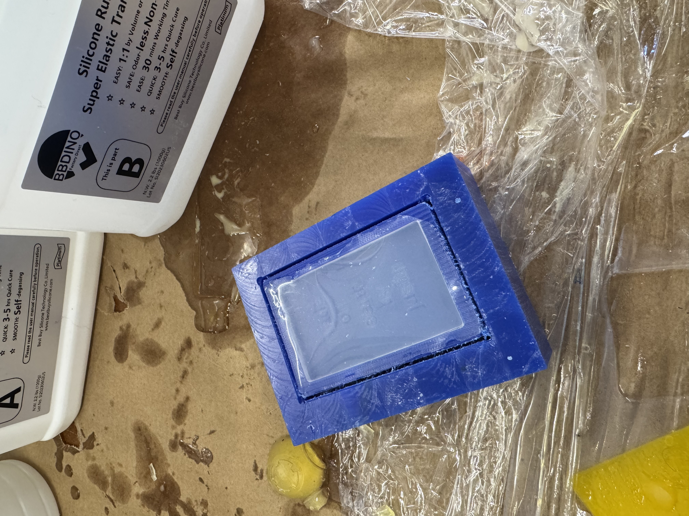
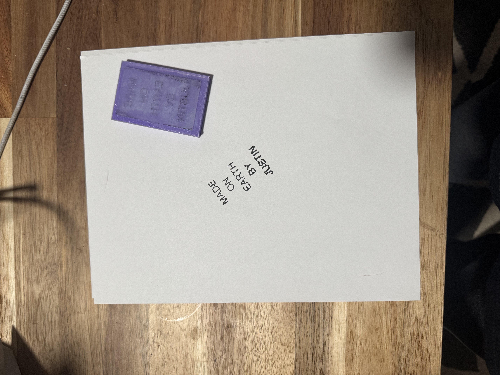

"Made on Earth by Justin"
For this week's assignment, we had two parts: first, design and fabricate something using the CNC machine, and second, post-process that design using an additional fabrication technique such as molding and casting, vacuum forming, or working with composites.
Inspired by Toy Story and the spirit of childhood creativity, I decided to make a custom stamp for the bottom of my final project—or, honestly, for anything I end up making in this class or beyond. The stamp reads: "Made on Earth by Justin," because, well, it was made on Earth… by me… Justin.
First I selected the appropriate settings, secured the wax to the cutting bed, and zeroed the X, Y, and Z axes.
Then, the magic began. I used a 1/8" flat endmill for the rough cut to clear out the bulk of the material, followed by a 1/16" bit to carve the finer details of the lettering. I did run into an issue where the software didn't want to cut the text because the letters were too narrow. With some helpful advice from Wyatt, I tricked the software into accepting the 1/16" bit by pretending it was a 1/32" bit. The carve came out beautifully, and in under an hour, I had a clean wax mold of my design, complete with a frame to hold the casting material.
With the CNC portion done, I moved on to molding and casting. I mixed equal parts of the A and B components of a firm silicone rubber and carefully poured the mixture into my wax mold.
To prevent bubbles from ruining the detail in the letters, I used a thin piece of wood to gently lift out trapped air and gave the mold a few light taps to release any hidden ones. After setting it aside for a few hours to cure, I peeled out a flawless silicone mold of my stamp.
I was really happy with the material choice—the silicone popped out easily and didn't need any post-processing. To finish things off, I 3D printed a small rectangular base and superglued the silicone onto it to create a sturdy, reusable stamp.
And just like that—BAM! I've got a functional stamp that marks my projects with the proud (and slightly cheeky) declaration: "Made on Earth by Justin."
 ← Back to Home